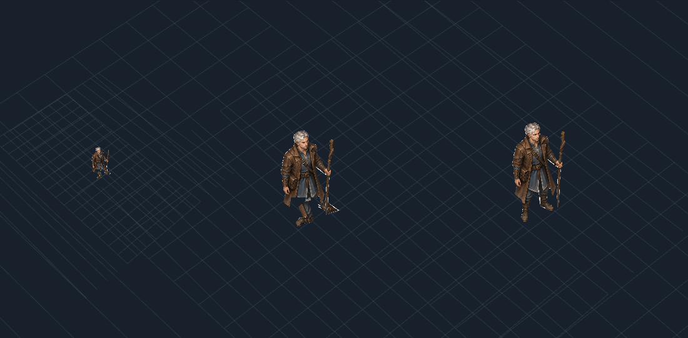
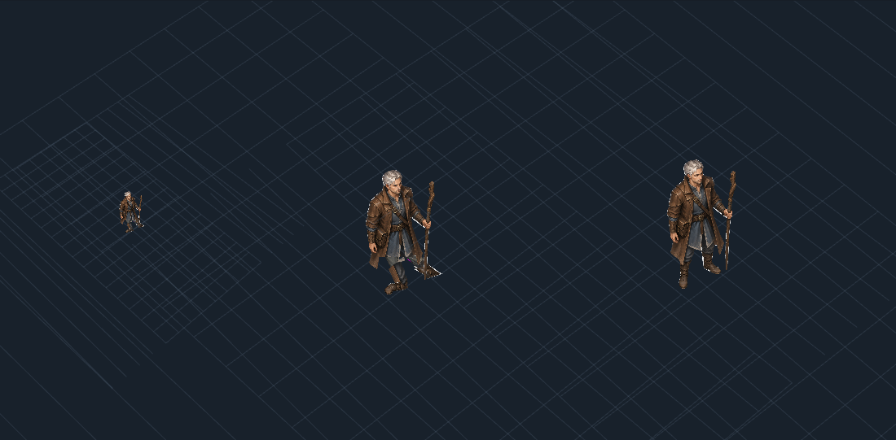
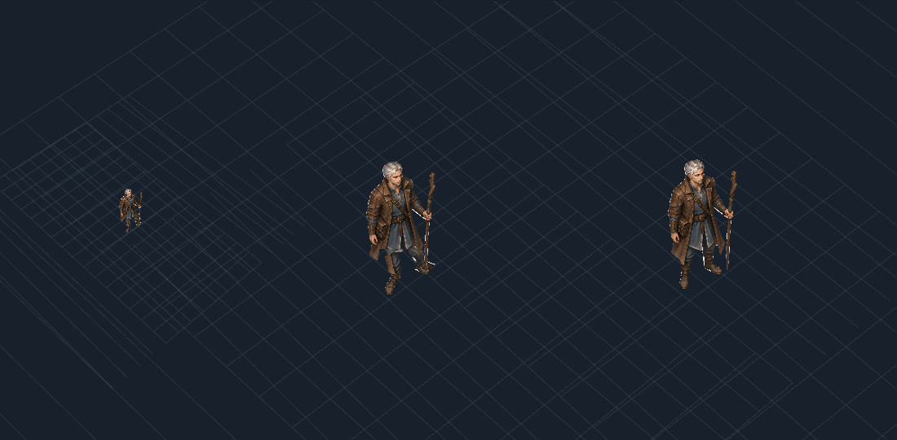

Godot shipping target · Pixi test harness · projection C, SE candidate only.
19/19 numerical checks pass. The artwork still reads as articulated cutouts; this is not a gait, gear or full-pilot pass.
Missing thigh artwork and fixed crouch. Each render: left 50px, centre 150px, right static 150px reference.


Contact/leg geometry passes; rigid torso and distorted leg read remain. Recommended next test: explicit lower-body pose keys.
